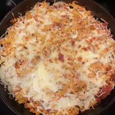

Cookies

Description
this cokkies is my fav xd omeglalul get L + ratio also 28 people can eat this or u can eat it by urself u fat man
this cokkie is yummy yum pls like or die
Ingredients
- ½ teaspoon baking powder
- ¼ teaspoon baking soda
- ⅛ teaspoon salt
- im tired figure it out by urself
Steps
- Preheat the oven to 350 degrees F (175 degrees C). Line 2 baking sheets with parchment paper.
- Whisk together flour, baking powder, baking soda, and salt in a medium bowl. Set aside.
- Beat sugar and butter in a large bowl with an electric mixer until light and fluffy, about 2 minutes. Mix in egg, vanilla extract, and almond extract until well combined. Add in 1/3 of the flour mixture and stir until just combined. Stir in 1/2 of the sour cream. Continue alternating additions of the flour mixture and sour cream, beginning and ending with the flour mixture, stirring until just combined. Do not overmix. Gently fold in blueberries and frozen pieces of cream cheese.
- im tired figure it out by urself